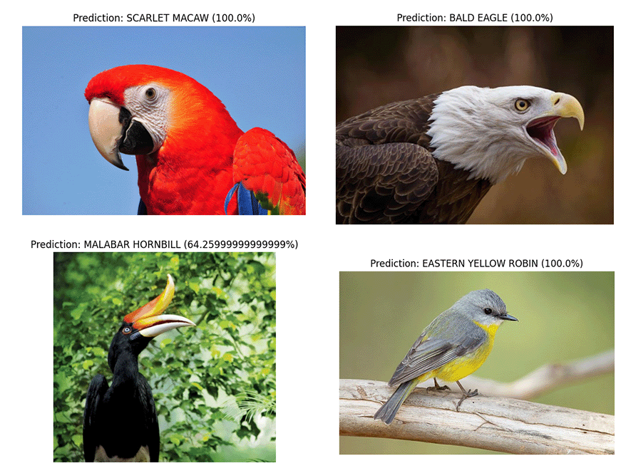
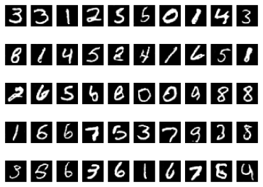
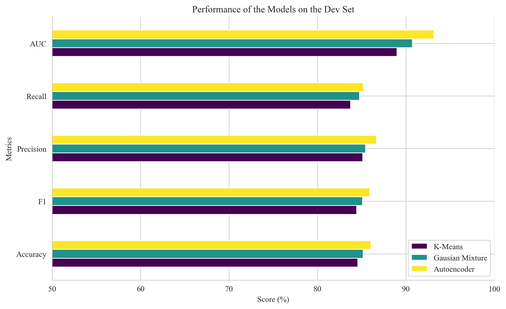
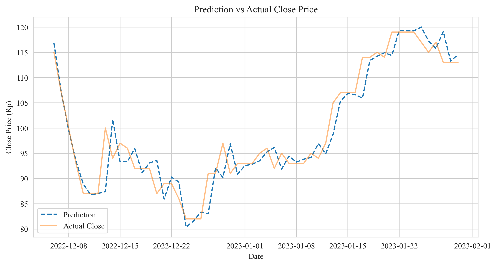
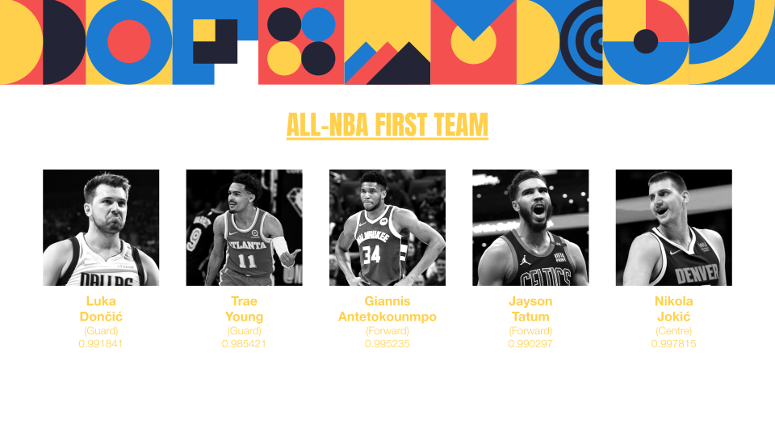

This was a project I did for Ruangguru's Engineering Academy Mastering AI Bootcamp, in particular their task was to train any image classifier on any dataset. Since I find birds to be quite fascinating, I decided to train my classifier on pictures of birds to classify them, and it turned out to be quite a fun project.
The dataset is taken from Gpiosenka's Kaggle Dataset. As the dataset is still actively being updated, I used the dataset from September 24th, 2023. It has 525 different species with 84,635 training images, 2,625 each for validation and test images
Trained it on Kaggle's P100 GPU with the help of Lightning. The model used was a pre-trained EfficientNet-B2 from HuggingFace which was originall trained for ImageNet-1K. It ended up performing super well, reaching 99% accuracy only after 26 epochs. Full training logs and hyperparameters are available in the repo and the model itself is available for download on HuggingFace's model hub.
What was actually memorable was that I got my first ever discussion on HuggingFace. It was a question about converting the model to ONNX, which was a fun and a bit frustrating experience for me.
A boredom project of mine, heavily inspired by Karpathy's video.This is a character-level Transformer model trained on the Harry Potter books. The aim of the project for me personally is to try to remember how to use PyTorch and Lightning, and to try to understand the Transformer model better.
The dataset is taken from Formcept's Github Repo. Obviously, the dataset is not big enough to train a good model, but it is good enough for me to try out some things.
Trained it on Kaggle's two T4 GPUs for 5 epochs and it took about roughly 10 hours. I used a batch-size of 512 and AdamW optimizer with a learning rate of 0.001. Other notable hyperparameters choice are the maximum context length (block size) of 32, embedding size of 512, 8 layers, 16 heads, and a dropout rate of 0.1.

An application of the DCGAN model on the MNIST dataset. The main aim for the project is to try design a working DCGAN, which is notoriously hard to train.
The model was trained using Kaggle's P100 GPU for about 200 epochs. The structure of the model resembles the one in Sebastian Raschka's Machine Learning with PyTorch and Scikit-Learn book. The generator and discriminator are both CNNs. The generator takes in a 100-dimensional noise vector and outputs a 28x28 image. The discriminator takes in a 28x28 image and outputs a single value, which is the probability that the image is real.

Payment card fraud is an ongoing major issue in the financial industry, causing substantial financial losses projected to reach 40 billion dollars in 2027. As the industry grows, detecting fraud patterns becomes inherently difficult, almost impossible to detect manually. Nowadays, the design of payment card fraud detection techniques rely on the use of unsupervised machine learning studying an imbalanced dataset uncovering patterns and outliers. We compared three unsupervised-learning models, namely K-Means Clustering, Gaussian Mixture, and AutoEncoder, in predicting transaction fraud. The idea of this project is to train each model with "clean" dataset which we have an abundance of and tune it to detect "novelties" which in this context are the fraudulent transactions.
Taken from Lopez-Rojas's Paysim dataset. It contains 6 million transactions, with 11 features. The dataset is highly imbalanced, with only 0.13% of the transactions being fraudulent.
The AutoEncoder method outperformed the other two methods with an AUC of 0.93. The reconstruction threshold was tuned to maximize the F1 score, which was 0.86. The reason why the model was tuned the threshold to maximize the F1 score was because although it is important to minimise the number of false negatives, flagging a lot of transactions as fraudulent would be a hassle for the customers.

Stock investment experienced an increase in investors during the Covid-19 pandemic era, thus creating a situation where many investors held discussions and shared news about stocks on social media, one of which was Twitter. The purpose of this study is to compare performance and find the best model from the SARIMAX (Seasonal Auto-Regressive Integrated Moving Average with eXogenous factors) and LSTM (Long Short-Term Memory) models in predicting changes in stock prices and find out significant exogenous variables in making predictions. This research was made to answer what models can predict changes in stock prices and what exogenous variables can be used for the model.
The data was taken from April 11th, 2022 up to January 31st, 2023. The historical stock prices was taken from Yahoo Finance!. Sentiments for this research was gathered from Twitter/X . Last, the daily increase of Covid-19 cases was taken from the Covid-19 API (which is now deprecated).
The LSTM with exogenous variables, which were the tweet sentiment and metadata along with new Covid-19 cases in Indonesia outperformed all other candidate models. That being said, we have found that not all exogenous variables were important for the model itself, the number of likes and quote tweets being the two worst contributors.

This project attempted to predict the All-NBA selections using Logistic Regression, Random Forests, and a Multi-Layer Perceptron. The aim for the project was to predict the probability for each player in a given season to be selected in either one of the All-NBA teams. The project was done for my sixth semester's Research and Methodology course final project. Paper for the project is available in this repo, but it is written in Bahasa Indonesia.
The data for the project was taken from Basketball-reference.com. The inputs for the models were Advanced Statistics for each players from the 1988-1989 season up to and including the 2020-2021 season. In order to validate the performance of the best model, the Advanced Statistics for the 2021-2022 season was used to predict the season's All-NBA selection.